Erts
Ertsblokken zijn natuurlijk voorkomende bloksoorten die gevonden kunnen worden onder de grond, als een ertsblok gebroken wordt laat het het soort erts achter wat er in zat. Er zijn 10 soorten erts met elk hun eigen nut. Als negen stukken van hetzelfde erts bij elkaar worden gevoegd in een werkbank zorgt dat voor een blok gemaakt van dat erts, dit kan gebruikt worden om grote hoeveelheden compacter op te bergen of om te laten zien aan andere spelers dat je er veel van hebt door je woning ervan te maken. De blokken kunnen weer terugveranderd worden in ertsen door het blok in de werkbank te doen, je krijgt dan weer 9 erts terug.
Steenkool
Steenkool wordt gebruikt als brandstof voor ovens of, wanneer samen met een stok gecombineerd, zorgt het voor een fakkel, wat licht geeft.
Ijzer
Ijzer wordt gebruikt voor harnassen, gereedschap, schilden en emmers. Naast het standaard gereedschap kan ijzer ook nog gebruikt worden voor scharen en aanstekers. Ijzer is het op 2 na sterkste harnas- en gereedchapssoort in het spel.
Goud

Goud wordt gebruikt voor harnassen, gereedschap en gouden appels en wortels. Goud is het op 1 na zwakste harnas- en gereedschapsoort in het spel (met alleen leer voor harnas en hout voor gereedchap eronder). Een gouden pikhouweel is de enige die het respectievelijke ertsblok niet succesvol kan slopen.
Diamant

Diamant wordt gebruikt voor harnassen en gereedschap. Diamant is het op 1 na sterkste harnas- en gereedschapsoort in het spel.
Netheriet
Netheriet wordt gebruikt voor harnassen en gereedschap. Netheriet is het sterkste harnas- en gereedschapsoort in het spel. Het kan alleen gevonden worden in de Onderwereld.
Smaragd
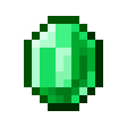
Smaragd wordt gebruikt als valuta om spullen te kopen en verkopen aan dorpelingen. Het ertsblok kan alleen gevonden worden in de bergen.
Roodsteen

Roodsteen wordt gebruikt als een soort elektriciteit, waardoor je dingen kan van een dynamiet opblazen op afstand tot een rekenmachine maken in de game zelf.
Koper
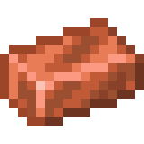
Koper wordt gebruikt als decoratie in blokvorm of voor een bliksemgeleider.
Lapis Lazuli

Lapis Lazuli wordt gebruikt om wapens en harnassen sterken te maken door middel van betovering, ook is het handig als blauwe kleurstof.
Kwarts
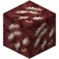 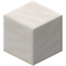
Kwarts wordt als een decoratief blok, door de witte kleur geeft het een deftig en luxueus gevoel. Het is ook niet het makkelijkste blok om te krijgen, aangezien het alleen te vinden is in de onderwereld.
Glas, Beton & Wol
Glas, Beton & Wol lijken meer op elkaar dan je eerst zou denken. Dat ligt aan dat alle 3 van deze blokken in 16 verschillende kleuren geverfd kan worden, deze kleuren zijn:
- Zwart 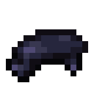
- Grijs 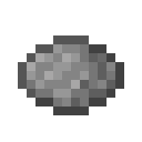
- Licht Grijs 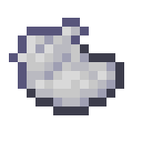
- Wit 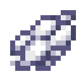
- Rood 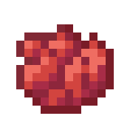
- Oranje 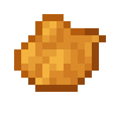
- Geel

- Lichtgroen 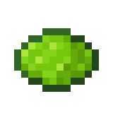
- Groen

- Lichtblauw 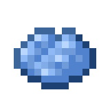
- Cyaan 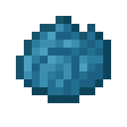
- Blauw 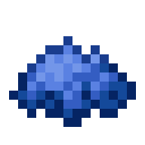
- Paars 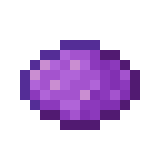
- Magenta 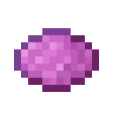
- Roze 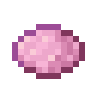
- Bruin 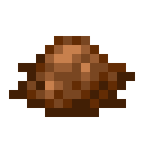
Glas
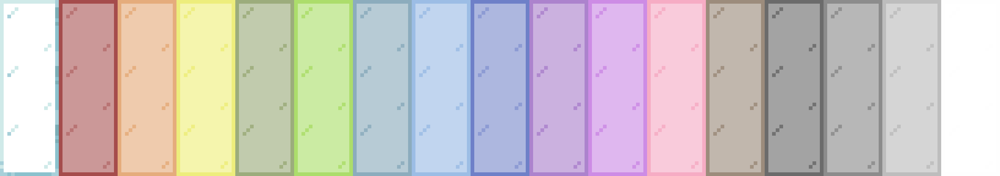
Glas is anders dan de andere 2 blokken in dat het, zoals je al kan verwachten, grotendeels transparant is, ook heeft het een versie (genaamd raam) die 16x16x1 pixels is, in plaats van het gewone 16x16x16 pixels. Dit zorgt voor een gevoel van diepte en is in de game geïmplementeerd na veel verzoeken van spelers.
Beton

Beton is anders dan de andere 2 blokken in dat het een speciale manier heeft om te mkaen, Dus niet zoals altijd een ingrediënt in de oven of op de werkbank en voilà. Om beton te maken is het blok dat je op de werkbank maakt cement, door 4 blokken zand, 4 blokken grind en een kleurstof naar keuze te combineren. Dat cement werkt hetzelfde als zand en grind in dat het naar beneden valt als het er geen blok onder staat. Het cement wordt beton als het in aanraking komt water, waarna dat niet meer omgekeerd kan worden.
Wol
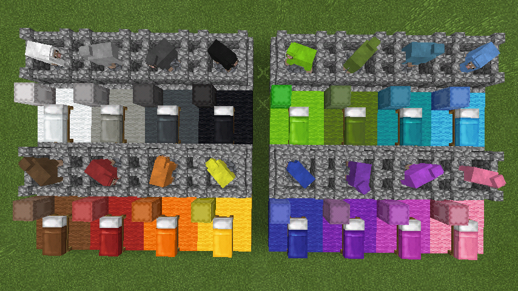
Wol is anders dan de andere 2 blokken in dat het voor meer dan decoratie gebruikt kan worden. Drie blokken wol gecombineerd met 3 blokken planken maakt namelijk een bed. Bedden worden gebruikt om in te slapen, waardoor de nacht overgeslagen kan worden en de monsters niet zullen verschijnen. Het is niet mogelijk om een bed te gebruiken in de buurt van al bestaande monsters.
Daarnaast komt wol van het scheren van geschapen, die ook geverfd kunnen worden.

 . Keien kunnen gebruikt worden voor o.a. gereedschap en ovens.
. Keien kunnen gebruikt worden voor o.a. gereedschap en ovens.